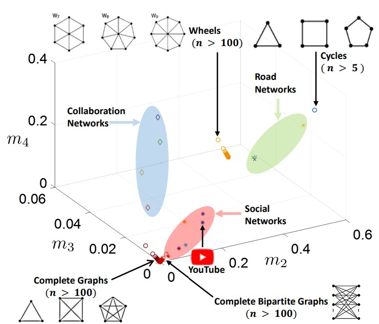

|
Research
My research mainly lies in the following fields of
- Graph sparsification and growth;
- Graph representation;
- Model compression and acceleration.
Much of my research now is related to Graph Neural Networks (e.g., Graph Convolutional Networks), Graph Signal Processing (GSP) and Graph Spectral Theory. For an up-to-date publication list, please see my Google Scholar. I am also interested in using Graph Neural Networks to address some quesitons about the computer vision and natural language processing.
|
|
News
- 12/2022: Our paper on spectral measure for network robustness is accepted at ICKG 2022
- 08/2022: Our paper spectral representation of networks is accepted at KDD 2022
- 05/2022: Our paper an adversarial attack framework for spatial-temporal GNNs is accepted at ICASSP 2022
- 11/2021: Our paper graph sparsification with graph convolutional networks is accepted at JDSA
- 01/2021: Our paper a graph sparsifier based on graph convolutional networks is accepted at PAKDD 2020
- More news
- 04/2019: Our paper an algorithm-hardware co-design framework of DNNs is accepted at ASPLOS 2019
- 11/2018: Our paper on universal approximation property and equivalence is accepted at AAAI 2019
- 04/2018: Our paper structured weight matrices-based hardware accelerators in DNNs is accepted at GLSVLS 2018
|
Selected Publications
Google Scholar for all publications
|
|

|
A Spectral Measure for Network Robustness: Assessment, Design, and Evolution
Shengmin Jin, Rui Ma, Jiayu Li, Sara Eftekharnejad, Reza Zafarani
IEEE International Conference on Knowledge Graph (ICKG), 2022.
[paper]
A spectral measure for network robustness: the second spectral moment m2 of the network. Our results show that a smaller second spectral moment m2 indicates a more robust network. We demonstrate both theoretically and with extensive empirical studies that the second spectral moment can help
- More
- capture various traditional measures of network robustness;
- assess the robustness of networks;
- design networks with controlled robustness;
- study how complex networked systems (e.g., power systems) behave under cascading failures.
|
|
Conference/Journal Reviewer and Service
- KDD 2019, KDD 2020, KDD 2021, KDD 2022
- WWW 2018, WWW 2019, WWW 2020
- SIGIR 2021, SIGIR 2022
- WSDM 2018, WSDM 2019, WSDM 2020
- CIKM 2020, CIKM 2021, CIKM 2022
- More reviews
- AAAI 2019
- ECML-PKDD 2020
- PAKDD 2018, PAKDD 2019, PAKDD 2020, PAKDD 2021
- International Journal of Neural Computing and Applications
- International Journal of Computer Science and Technology
- IEEE Access
|
|
Honors and Awards
- ICASSP 2022 Student Travel Grant
- PAKDD 2020 Student Travel Grant
- Syracuse University Travel Grant 2018, 2020, 2022
- Syracuse University Graduate Grant, 2015
|
|
{kind=link}